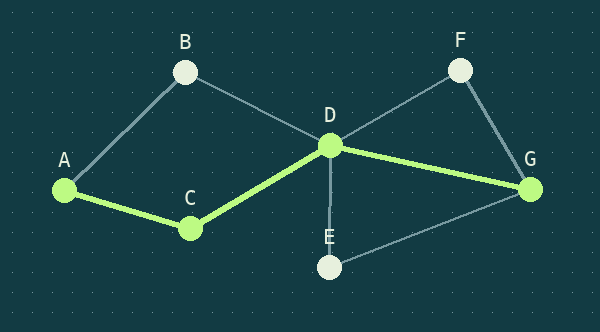

Follow one route across a game map, from the first line of code to the algorithm that chooses the next move.
Explore the courses
Look at the highlighted route above. It reaches G from A, but is it the fastest? First you must decide what each connection costs: one move, a minute, or some energy. Computer science gives you ways to represent those choices, design an algorithm and explain why its answer works.
An idea from one course can turn up in another major. A graph you meet in data structures can become the map in a game. Computing has a longer academic history than many students expect: Purdue established the first US computer science department in 1962.
Each question below is a practice idea for a course listed by ASU.
Use this independent roadmap to choose a topic to practise alongside your university courses.
Open the computer science learning roadmap